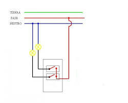
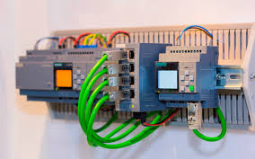

¡Bienvenido a ElectroCode! ⚡
Tu espacio definitivo para aprender, descargar y compartir recursos de diagramas eléctricos, automatización industrial y programación de tareas. Aquí encontrarás:
- 📊 Planos y diagramas eléctricos listos para usar (residenciales, industriales, PLC).
- 🤖 Códigos y programas para automatización (Arduino, Raspberry Pi, Ladder).
- 🎥 Tutoriales prácticos desde cero hasta nivel avanzado.
- 💡 Herramientas y software recomendados para ingenieros y técnicos.
¡Optimiza tus proyectos, ahorra tiempo y lleva tus habilidades al siguiente nivel con contenido 100% aplicable!
🔌 ¿Listo para empezar? Explora nuestros recursos gratuitos o únete a ElectroCode para acceso exclusivo.
📘 Diagrama de conexión
Este diagrama muestra la conexión eléctrica básica entre dispositivos industriales. Puedes usarlo como base para tus proyectos.
📗 Diagrama de PLC
Este diagrama describe la lógica de control de un PLC programado para una automatización simple.
